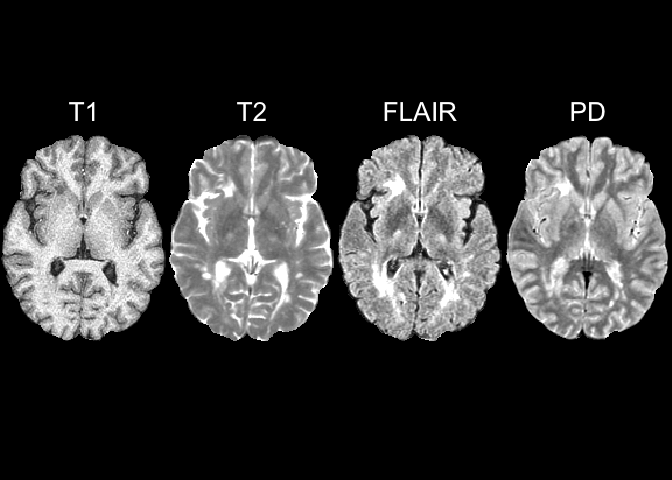
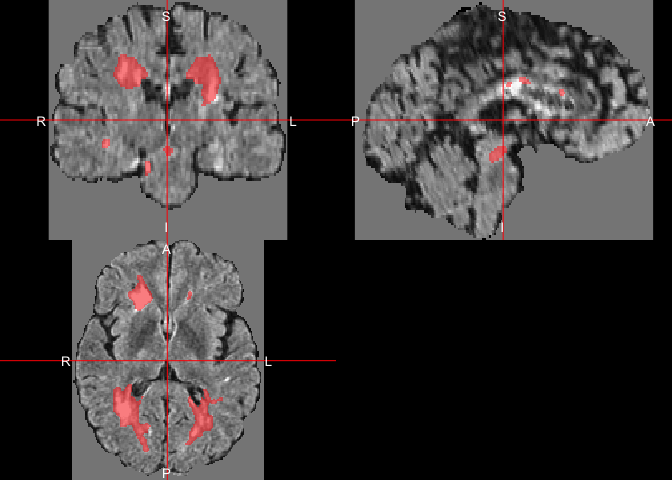
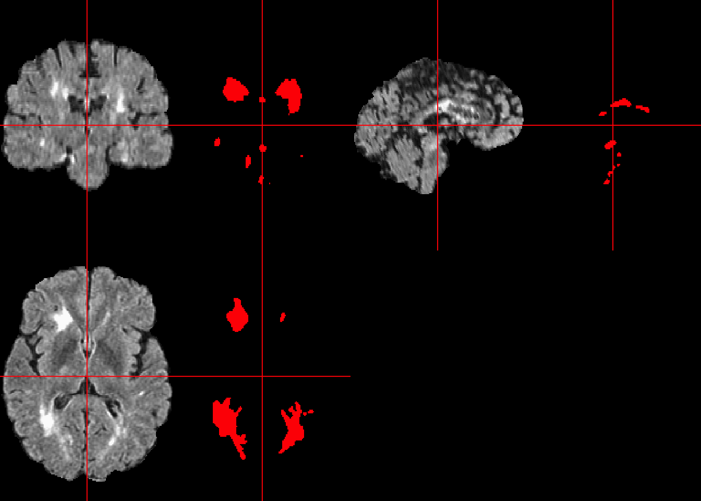
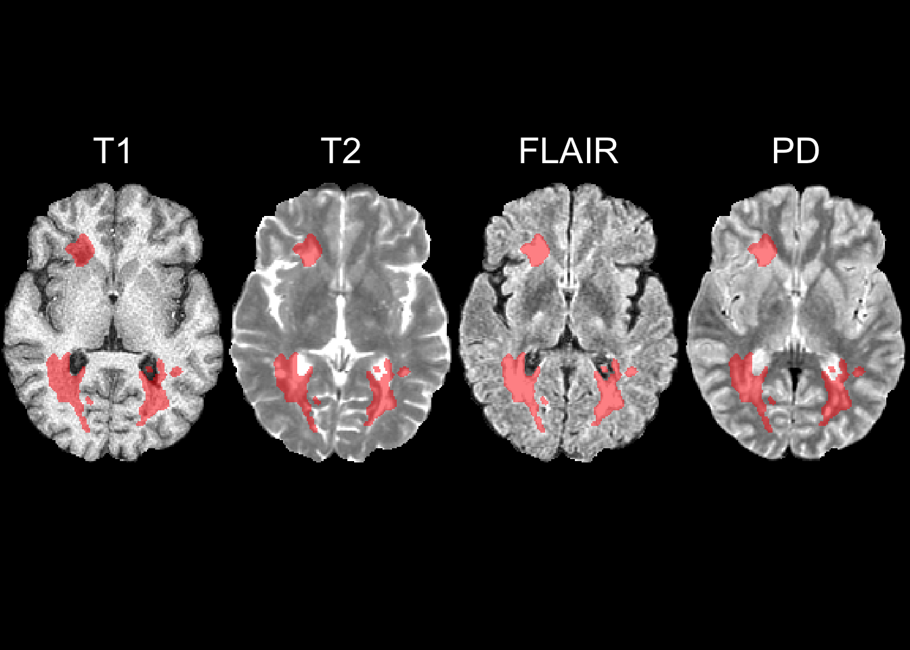

All code for this document is located at here.
We will be using the data from the 2015 Longitudinal Multiple Sclerosis Lesion Segmentation Challenge. The data consists of a single subject at 2 time points, baseline and followup. The data is available for non-commercial purposes. We will download the data from GitHub using the git2r package.
The data description was presented in E. Sweeney et al. (2013). The data in the folder was also discussed in Muschelli et al. (2015). It consists of one patient with multiple sclerosis (MS) with multi-sequence magnetic resonance imaging (MRI) data from 2 different time points.
Here we will be using the oasis package greater than version 2.2. If you do not have this package and it’s not located on CRAN yet, we will install it from GitHub.
library(dplyr)
loaded_package_version = function(pkg) {
packs = devtools::session_info()$packages
ver = packs %>%
filter(package %in% pkg) %>%
select(package, version)
return(ver)
}
check_package_version = function(pkg, min_version){
stopifnot(length(pkg) == 1)
ver = loaded_package_version(pkg = pkg)
ver = as.character(ver$version)
min_version = as.character(min_version)
# check to see if version is at least the min_version
utils::compareVersion(a = ver, b = min_version) >= 0
}
check = check_package_version("oasis", min_version = "2.2")
if (!check) {
devtools::install_github("emsweene/oasis")
}There was a slight bug in oasis_preproc which needed to be corrected for the following code to work
We will use the git2r package to download the package into a folder called data. The code below will clone the GitHub repository to the data folder, then delete the .git folder, which stores changes to the data, which can be a large file. We will also delete any processed data such as the brain mask and the skull-stripped image.
library(git2r)
if (!dir.exists("data")) {
repo = clone(url = "https://github.com/muschellij2/fslr_data",
local_path = "data/")
unlink(file.path("data/.git"), recursive = TRUE)
file.remove(file.path("data", "SS_Image.nii.gz"))
file.remove(file.path("data", "Brain_Mask.nii.gz"))
}data.frameHere we will make a data.frame that has the imaging modality and the case number so we can sort or reorder if necessary:
df = list.files(path = "data",
pattern = "[.]nii[.]gz$",
full.names = TRUE)
df = data.frame(file = df, stringsAsFactors = FALSE)
print(head(df)) file
1 data/01-Baseline_Brain_Mask.nii.gz
2 data/01-Baseline_FLAIR_ants_preprocessed.nii.gz
3 data/01-Baseline_FLAIR_preprocessed.nii.gz
4 data/01-Baseline_FLAIR.nii.gz
5 data/01-Baseline_N4_Brain_Mask.nii.gz
6 data/01-Baseline_PD_ants_preprocessed.nii.gzWe have the filenames in one column and will be doing some string manipulation to parse the information about the id and the modality/sequence:
df$fname = nii.stub(df$file, bn = TRUE)
df$id = gsub("^(\\d\\d)-.*", "\\1", df$fname)
df$timepoint = gsub("^\\d\\d-(.*)_.*$", "\\1", df$fname)
df$modality = gsub("\\d\\d-.*_(.*)$", "\\1", df$fname)
print(unique(df$id))[1] "01"print(unique(df$modality))[1] "Mask" "preprocessed" "FLAIR" "PD"
[5] "T1" "T2" print(head(df)) file
1 data/01-Baseline_Brain_Mask.nii.gz
2 data/01-Baseline_FLAIR_ants_preprocessed.nii.gz
3 data/01-Baseline_FLAIR_preprocessed.nii.gz
4 data/01-Baseline_FLAIR.nii.gz
5 data/01-Baseline_N4_Brain_Mask.nii.gz
6 data/01-Baseline_PD_ants_preprocessed.nii.gz
fname id timepoint modality
1 01-Baseline_Brain_Mask 01 Baseline_Brain Mask
2 01-Baseline_FLAIR_ants_preprocessed 01 Baseline_FLAIR_ants preprocessed
3 01-Baseline_FLAIR_preprocessed 01 Baseline_FLAIR preprocessed
4 01-Baseline_FLAIR 01 Baseline FLAIR
5 01-Baseline_N4_Brain_Mask 01 Baseline_N4_Brain Mask
6 01-Baseline_PD_ants_preprocessed 01 Baseline_PD_ants preprocessedThe oasis package implements the pipeline from E. M. Sweeney et al. (2013). The package relies on fslr and therefore a working installation of FSL. The package will perform the data preprocessing, train a model for lesion segmentation if gold-standard, manual segmentations are provided, and predict lesions from that model or the model from E. M. Sweeney et al. (2013) if no model (e.g. no gold standard) is provided.
ss = split(df, df$timepoint)
ss = lapply(ss, function(x){
mods = x$modality
xx = x$file
names(xx) = mods
return(xx)
})The preprocessing is performed using the oasis_preproc function. It requires a T1, T2, and FLAIR image. A proton density (PD) is not necessary, but the original OASIS model had PD and the model in the package relies on a PD image.
dat = ss[[1]]
print(dat) FLAIR PD
"data/01-Baseline_FLAIR.nii.gz" "data/01-Baseline_PD.nii.gz"
T1 T2
"data/01-Baseline_T1.nii.gz" "data/01-Baseline_T2.nii.gz" # preparing output filenames
outfiles = nii.stub(dat)
brain_mask = gsub("_T1$", "", outfiles["T1"])
brain_mask = paste0(brain_mask, "_Brain_Mask.nii.gz")
outfiles = paste0(outfiles, "_preprocessed.nii.gz")
names(outfiles) = names(dat)
outfiles = c(outfiles, brain_mask = brain_mask)
outfiles = outfiles[ names(outfiles) != "mask"]
if (!all(file.exists(outfiles))) {
pre = oasis_preproc(
flair = dat["FLAIR"],
t1 = dat["T1"],
t2 = dat["T2"],
pd = dat["PD"],
cores = 1)
writenii(pre$t1, filename = outfiles["T1"])
writenii(pre$t2, filename = outfiles["T2"])
writenii(pre$flair, filename = outfiles["FLAIR"])
writenii(pre$pd, filename = outfiles["PD"])
writenii(pre$brain_mask, filename = outfiles["brain_mask"])
}Here we will read in the output images and the brain mask. We will normalize the image intensities using zscore_img so that the intensities are in the same scale range for plotting. We will
imgs = lapply(outfiles[c("T1", "T2", "FLAIR", "PD")], readnii)
brain_mask = readnii(outfiles["brain_mask"])
imgs = lapply(imgs, robust_window)
norm_imgs = lapply(imgs, zscore_img, margin = NULL, mask = brain_mask)We will drop the empty image dimensions for plotting later. We pass in the mask and the list of normalized images, remove the empty dimensions, and then we later re-mask the data
dd = dropEmptyImageDimensions(brain_mask, other.imgs = norm_imgs)
red_mask = dd$outimg
norm_imgs = dd$other.imgs
norm_imgs = lapply(norm_imgs, mask_img, mask = red_mask)Here we will show each imaging modality at the same slice:
z = floor(nsli(norm_imgs[[1]])/2)
multi_overlay(
norm_imgs,
z = z,
text = names(norm_imgs),
text.x =
rep(0.5, length(norm_imgs)),
text.y =
rep(1.4, length(norm_imgs)),
text.cex =
rep(2.5, length(norm_imgs)))
We see that the registration seems to have performed well in that the same slice across sequences represent the same areas of the brain.
Now that we’ve performed preprocessing of the data, we can create a dataset of these images whole-brain normalized and a series of smoothed images of the data.
df_list = oasis_train_dataframe(
flair = outfiles["FLAIR"],
t1 = outfiles["T1"],
t2 = outfiles["T2"],
pd = outfiles["PD"],
preproc = FALSE,
brain_mask = outfiles["brain_mask"],
eroder = "oasis")Checking File inputsEroding Brain MaskNormalizing Images using Z-scoreVoxel Selection ProcedureSmoothing Images: Sigma = 10fslmaths "/private/var/folders/1s/wrtqcpxn685_zk570bnx9_rr0000gr/T/RtmpZT2MJa/file9f8b40ea93a.nii.gz" -mas "/private/var/folders/1s/wrtqcpxn685_zk570bnx9_rr0000gr/T/RtmpZT2MJa/file9f8b5e8820ea.nii.gz" -s 10 "/var/folders/1s/wrtqcpxn685_zk570bnx9_rr0000gr/T//RtmpZT2MJa/file9f8b3b291322"; fslmaths "/private/var/folders/1s/wrtqcpxn685_zk570bnx9_rr0000gr/T/RtmpZT2MJa/file9f8b5e8820ea.nii.gz" -s 10 "/private/var/folders/1s/wrtqcpxn685_zk570bnx9_rr0000gr/T/RtmpZT2MJa/file9f8b5e8820ea_10"; fslmaths "/var/folders/1s/wrtqcpxn685_zk570bnx9_rr0000gr/T//RtmpZT2MJa/file9f8b3b291322" -div "/private/var/folders/1s/wrtqcpxn685_zk570bnx9_rr0000gr/T/RtmpZT2MJa/file9f8b5e8820ea_10" -mas "/private/var/folders/1s/wrtqcpxn685_zk570bnx9_rr0000gr/T/RtmpZT2MJa/file9f8b5e8820ea.nii.gz" "/var/folders/1s/wrtqcpxn685_zk570bnx9_rr0000gr/T//RtmpZT2MJa/file9f8b3b291322";fslmaths "/private/var/folders/1s/wrtqcpxn685_zk570bnx9_rr0000gr/T/RtmpZT2MJa/file9f8b5a73b86.nii.gz" -mas "/private/var/folders/1s/wrtqcpxn685_zk570bnx9_rr0000gr/T/RtmpZT2MJa/file9f8b2634dd50.nii.gz" -s 10 "/var/folders/1s/wrtqcpxn685_zk570bnx9_rr0000gr/T//RtmpZT2MJa/file9f8b58adc2c8"; fslmaths "/private/var/folders/1s/wrtqcpxn685_zk570bnx9_rr0000gr/T/RtmpZT2MJa/file9f8b2634dd50.nii.gz" -s 10 "/private/var/folders/1s/wrtqcpxn685_zk570bnx9_rr0000gr/T/RtmpZT2MJa/file9f8b2634dd50_10"; fslmaths "/var/folders/1s/wrtqcpxn685_zk570bnx9_rr0000gr/T//RtmpZT2MJa/file9f8b58adc2c8" -div "/private/var/folders/1s/wrtqcpxn685_zk570bnx9_rr0000gr/T/RtmpZT2MJa/file9f8b2634dd50_10" -mas "/private/var/folders/1s/wrtqcpxn685_zk570bnx9_rr0000gr/T/RtmpZT2MJa/file9f8b2634dd50.nii.gz" "/var/folders/1s/wrtqcpxn685_zk570bnx9_rr0000gr/T//RtmpZT2MJa/file9f8b58adc2c8";fslmaths "/private/var/folders/1s/wrtqcpxn685_zk570bnx9_rr0000gr/T/RtmpZT2MJa/file9f8b77cf05f3.nii.gz" -mas "/private/var/folders/1s/wrtqcpxn685_zk570bnx9_rr0000gr/T/RtmpZT2MJa/file9f8b388fd1f8.nii.gz" -s 10 "/var/folders/1s/wrtqcpxn685_zk570bnx9_rr0000gr/T//RtmpZT2MJa/file9f8b6a220dca"; fslmaths "/private/var/folders/1s/wrtqcpxn685_zk570bnx9_rr0000gr/T/RtmpZT2MJa/file9f8b388fd1f8.nii.gz" -s 10 "/private/var/folders/1s/wrtqcpxn685_zk570bnx9_rr0000gr/T/RtmpZT2MJa/file9f8b388fd1f8_10"; fslmaths "/var/folders/1s/wrtqcpxn685_zk570bnx9_rr0000gr/T//RtmpZT2MJa/file9f8b6a220dca" -div "/private/var/folders/1s/wrtqcpxn685_zk570bnx9_rr0000gr/T/RtmpZT2MJa/file9f8b388fd1f8_10" -mas "/private/var/folders/1s/wrtqcpxn685_zk570bnx9_rr0000gr/T/RtmpZT2MJa/file9f8b388fd1f8.nii.gz" "/var/folders/1s/wrtqcpxn685_zk570bnx9_rr0000gr/T//RtmpZT2MJa/file9f8b6a220dca";fslmaths "/private/var/folders/1s/wrtqcpxn685_zk570bnx9_rr0000gr/T/RtmpZT2MJa/file9f8b61b77f35.nii.gz" -mas "/private/var/folders/1s/wrtqcpxn685_zk570bnx9_rr0000gr/T/RtmpZT2MJa/file9f8b5600a2b1.nii.gz" -s 10 "/var/folders/1s/wrtqcpxn685_zk570bnx9_rr0000gr/T//RtmpZT2MJa/file9f8b43b93e93"; fslmaths "/private/var/folders/1s/wrtqcpxn685_zk570bnx9_rr0000gr/T/RtmpZT2MJa/file9f8b5600a2b1.nii.gz" -s 10 "/private/var/folders/1s/wrtqcpxn685_zk570bnx9_rr0000gr/T/RtmpZT2MJa/file9f8b5600a2b1_10"; fslmaths "/var/folders/1s/wrtqcpxn685_zk570bnx9_rr0000gr/T//RtmpZT2MJa/file9f8b43b93e93" -div "/private/var/folders/1s/wrtqcpxn685_zk570bnx9_rr0000gr/T/RtmpZT2MJa/file9f8b5600a2b1_10" -mas "/private/var/folders/1s/wrtqcpxn685_zk570bnx9_rr0000gr/T/RtmpZT2MJa/file9f8b5600a2b1.nii.gz" "/var/folders/1s/wrtqcpxn685_zk570bnx9_rr0000gr/T//RtmpZT2MJa/file9f8b43b93e93";Smoothing Images: Sigma = 20fslmaths "/private/var/folders/1s/wrtqcpxn685_zk570bnx9_rr0000gr/T/RtmpZT2MJa/file9f8b36bb47a1.nii.gz" -mas "/private/var/folders/1s/wrtqcpxn685_zk570bnx9_rr0000gr/T/RtmpZT2MJa/file9f8b415bb719.nii.gz" -s 20 "/var/folders/1s/wrtqcpxn685_zk570bnx9_rr0000gr/T//RtmpZT2MJa/file9f8b6c51ebd4"; fslmaths "/private/var/folders/1s/wrtqcpxn685_zk570bnx9_rr0000gr/T/RtmpZT2MJa/file9f8b415bb719.nii.gz" -s 20 "/private/var/folders/1s/wrtqcpxn685_zk570bnx9_rr0000gr/T/RtmpZT2MJa/file9f8b415bb719_20"; fslmaths "/var/folders/1s/wrtqcpxn685_zk570bnx9_rr0000gr/T//RtmpZT2MJa/file9f8b6c51ebd4" -div "/private/var/folders/1s/wrtqcpxn685_zk570bnx9_rr0000gr/T/RtmpZT2MJa/file9f8b415bb719_20" -mas "/private/var/folders/1s/wrtqcpxn685_zk570bnx9_rr0000gr/T/RtmpZT2MJa/file9f8b415bb719.nii.gz" "/var/folders/1s/wrtqcpxn685_zk570bnx9_rr0000gr/T//RtmpZT2MJa/file9f8b6c51ebd4";fslmaths "/private/var/folders/1s/wrtqcpxn685_zk570bnx9_rr0000gr/T/RtmpZT2MJa/file9f8b7651e2da.nii.gz" -mas "/private/var/folders/1s/wrtqcpxn685_zk570bnx9_rr0000gr/T/RtmpZT2MJa/file9f8b7a0492e5.nii.gz" -s 20 "/var/folders/1s/wrtqcpxn685_zk570bnx9_rr0000gr/T//RtmpZT2MJa/file9f8b424836f8"; fslmaths "/private/var/folders/1s/wrtqcpxn685_zk570bnx9_rr0000gr/T/RtmpZT2MJa/file9f8b7a0492e5.nii.gz" -s 20 "/private/var/folders/1s/wrtqcpxn685_zk570bnx9_rr0000gr/T/RtmpZT2MJa/file9f8b7a0492e5_20"; fslmaths "/var/folders/1s/wrtqcpxn685_zk570bnx9_rr0000gr/T//RtmpZT2MJa/file9f8b424836f8" -div "/private/var/folders/1s/wrtqcpxn685_zk570bnx9_rr0000gr/T/RtmpZT2MJa/file9f8b7a0492e5_20" -mas "/private/var/folders/1s/wrtqcpxn685_zk570bnx9_rr0000gr/T/RtmpZT2MJa/file9f8b7a0492e5.nii.gz" "/var/folders/1s/wrtqcpxn685_zk570bnx9_rr0000gr/T//RtmpZT2MJa/file9f8b424836f8";fslmaths "/private/var/folders/1s/wrtqcpxn685_zk570bnx9_rr0000gr/T/RtmpZT2MJa/file9f8b1310f5c7.nii.gz" -mas "/private/var/folders/1s/wrtqcpxn685_zk570bnx9_rr0000gr/T/RtmpZT2MJa/file9f8b3e77e598.nii.gz" -s 20 "/var/folders/1s/wrtqcpxn685_zk570bnx9_rr0000gr/T//RtmpZT2MJa/file9f8b31827e32"; fslmaths "/private/var/folders/1s/wrtqcpxn685_zk570bnx9_rr0000gr/T/RtmpZT2MJa/file9f8b3e77e598.nii.gz" -s 20 "/private/var/folders/1s/wrtqcpxn685_zk570bnx9_rr0000gr/T/RtmpZT2MJa/file9f8b3e77e598_20"; fslmaths "/var/folders/1s/wrtqcpxn685_zk570bnx9_rr0000gr/T//RtmpZT2MJa/file9f8b31827e32" -div "/private/var/folders/1s/wrtqcpxn685_zk570bnx9_rr0000gr/T/RtmpZT2MJa/file9f8b3e77e598_20" -mas "/private/var/folders/1s/wrtqcpxn685_zk570bnx9_rr0000gr/T/RtmpZT2MJa/file9f8b3e77e598.nii.gz" "/var/folders/1s/wrtqcpxn685_zk570bnx9_rr0000gr/T//RtmpZT2MJa/file9f8b31827e32";fslmaths "/private/var/folders/1s/wrtqcpxn685_zk570bnx9_rr0000gr/T/RtmpZT2MJa/file9f8b6e2b1e02.nii.gz" -mas "/private/var/folders/1s/wrtqcpxn685_zk570bnx9_rr0000gr/T/RtmpZT2MJa/file9f8b50bf4dcf.nii.gz" -s 20 "/var/folders/1s/wrtqcpxn685_zk570bnx9_rr0000gr/T//RtmpZT2MJa/file9f8b3f8d7a73"; fslmaths "/private/var/folders/1s/wrtqcpxn685_zk570bnx9_rr0000gr/T/RtmpZT2MJa/file9f8b50bf4dcf.nii.gz" -s 20 "/private/var/folders/1s/wrtqcpxn685_zk570bnx9_rr0000gr/T/RtmpZT2MJa/file9f8b50bf4dcf_20"; fslmaths "/var/folders/1s/wrtqcpxn685_zk570bnx9_rr0000gr/T//RtmpZT2MJa/file9f8b3f8d7a73" -div "/private/var/folders/1s/wrtqcpxn685_zk570bnx9_rr0000gr/T/RtmpZT2MJa/file9f8b50bf4dcf_20" -mas "/private/var/folders/1s/wrtqcpxn685_zk570bnx9_rr0000gr/T/RtmpZT2MJa/file9f8b50bf4dcf.nii.gz" "/var/folders/1s/wrtqcpxn685_zk570bnx9_rr0000gr/T//RtmpZT2MJa/file9f8b3f8d7a73";oasis_dataframe = df_list$oasis_dataframe
brain_mask = df_list$brain_mask
top_voxels = df_list$voxel_selectionWe will use the model included in the oasis package since we do not currently have a gold standard. After predicting, we smooth the probability map using adjacent voxel probabilities. We then threshold this probability map to give a binary prediction of lesions.
## make the model predictions
predictions = predict( oasis::oasis_model,
newdata = oasis_dataframe,
type = 'response')
pred_img = niftiarr(brain_mask, 0)
pred_img[top_voxels == 1] = predictions
library(fslr)
Attaching package: 'fslr'The following object is masked from 'package:git2r':
checkout##smooth the probability map
prob_map = fslsmooth(pred_img, sigma = 1.25,
mask = brain_mask, retimg = TRUE,
smooth_mask = TRUE)fslmaths "/private/var/folders/1s/wrtqcpxn685_zk570bnx9_rr0000gr/T/RtmpZT2MJa/file9f8b766c615d.nii.gz" -mas "/private/var/folders/1s/wrtqcpxn685_zk570bnx9_rr0000gr/T/RtmpZT2MJa/file9f8b456c5d68.nii.gz" -s 1.25 "/var/folders/1s/wrtqcpxn685_zk570bnx9_rr0000gr/T//RtmpZT2MJa/file9f8b4d687a73"; fslmaths "/private/var/folders/1s/wrtqcpxn685_zk570bnx9_rr0000gr/T/RtmpZT2MJa/file9f8b456c5d68.nii.gz" -s 1.25 "/private/var/folders/1s/wrtqcpxn685_zk570bnx9_rr0000gr/T/RtmpZT2MJa/file9f8b456c5d68_1.25"; fslmaths "/var/folders/1s/wrtqcpxn685_zk570bnx9_rr0000gr/T//RtmpZT2MJa/file9f8b4d687a73" -div "/private/var/folders/1s/wrtqcpxn685_zk570bnx9_rr0000gr/T/RtmpZT2MJa/file9f8b456c5d68_1.25" -mas "/private/var/folders/1s/wrtqcpxn685_zk570bnx9_rr0000gr/T/RtmpZT2MJa/file9f8b456c5d68.nii.gz" "/var/folders/1s/wrtqcpxn685_zk570bnx9_rr0000gr/T//RtmpZT2MJa/file9f8b4d687a73";threshold = 0.16
binary_map = prob_map > thresholdWe can apply our empty-slice reduction from earlier so that the binary prediction and the normalized images are the same dimensions.
We will overlay the predictions on the images and use the alpha function from the scales package to alpha-blend the intensities so we can see the underlying image as well as the areas delineated as lesion.
library(scales)
reduced_binary_map = apply_empty_dim(img = binary_map,
inds = dd$inds)
ortho2(norm_imgs$FLAIR, reduced_binary_map,
col.y = scales::alpha("red", 0.5))
double_ortho(norm_imgs$FLAIR, reduced_binary_map, col.y = "red")
multi_overlay(
norm_imgs,
y = list(reduced_binary_map,
reduced_binary_map,
reduced_binary_map,
reduced_binary_map),
col.y = scales::alpha("red", 0.5) ,
z = z,
text = names(norm_imgs),
text.x =
rep(0.5, length(norm_imgs)),
text.y =
rep(1.4, length(norm_imgs)),
text.cex =
rep(2.5, length(norm_imgs)))
Although the original OASIS model was done using FSL, we can perform preprocessing in ANTsR if we later would like to train a model based on this preprocessing. Note, the original model may not work well as it may be specific to the preprocessing done in FSL.
check = check_package_version("extrantsr", min_version = "2.2.1")
if (!check) {
devtools::install_github("muschellij2/extrantsr")
}dat = ss[[1]]
print(dat) FLAIR PD
"data/01-Baseline_FLAIR.nii.gz" "data/01-Baseline_PD.nii.gz"
T1 T2
"data/01-Baseline_T1.nii.gz" "data/01-Baseline_T2.nii.gz" # preparing output filenames
ants_outfiles = nii.stub(dat)
n4_brain_mask = gsub("_T1$", "", ants_outfiles["T1"])
n4_brain_mask = paste0(n4_brain_mask, "_N4_Brain_Mask.nii.gz")
ants_outfiles = paste0(ants_outfiles, "_ants_preprocessed.nii.gz")
names(ants_outfiles) = names(dat)
ants_outfiles = ants_outfiles[ names(ants_outfiles) != "mask"]
if (!all(file.exists(ants_outfiles))) {
pre = preprocess_mri_within(
files = dat[c("T1", "T2", "FLAIR", "PD")],
outfiles = ants_outfiles[c("T1", "T2", "FLAIR", "PD")],
correct = TRUE,
correction = "N4",
skull_strip = FALSE,
typeofTransform = "Rigid",
interpolator = "LanczosWindowedSinc")
ss = fslbet_robust(
ants_outfiles["T1"],
correct = FALSE,
bet.opts = "-v")
ss = ss > 0
writenii(ss, filename = n4_brain_mask)
imgs = lapply(ants_outfiles[c("T1", "T2", "FLAIR", "PD")],
readnii)
imgs = lapply(imgs, mask_img, ss)
imgs = lapply(imgs, bias_correct, correction = "N4",
mask = ss)
mapply(function(img, fname){
writenii(img, filename = fname)
}, imgs, ants_outfiles[c("T1", "T2", "FLAIR", "PD")])
}L = oasis_train_dataframe(
flair = ants_outfiles["FLAIR"],
t1 = ants_outfiles["T1"],
t2 = ants_outfiles["T2"],
pd = ants_outfiles["PD"],
preproc = FALSE,
brain_mask = n4_brain_mask,
eroder = "oasis")
ants_oasis_dataframe = L$oasis_dataframe
ants_brain_mask = L$brain_mask
ants_top_voxels = L$voxel_selectionlibrary(cluster)
km = kmeans(x = ants_oasis_dataframe, centers = 4)
km_img = niftiarr(ants_brain_mask, 0)
km_img[ants_top_voxels == 1] = km$cluster
n4_flair = readnii(ants_outfiles["FLAIR"])
res = clara(x = ants_oasis_dataframe, k = 4)
cl_img = niftiarr(ants_brain_mask, 0)
cl_img[ants_top_voxels == 1] = res$clustering
ortho2(n4_flair, cl_img > 3, col.y = scales::alpha("red", 0.5))Muschelli, John, Elizabeth Sweeney, Martin Lindquist, and Ciprian Crainiceanu. 2015. “Fslr: Connecting the Fsl Software with R.” The R Journal 7 (1): 163–75.
Sweeney, Elizabeth M, Russell T Shinohara, Navid Shiee, Farrah J Mateen, Avni A Chudgar, Jennifer L Cuzzocreo, Peter A Calabresi, Dzung L Pham, Daniel S Reich, and Ciprian M Crainiceanu. 2013. “OASIS Is Automated Statistical Inference for Segmentation, with Applications to Multiple Sclerosis Lesion Segmentation in Mri.” NeuroImage: Clinical 2. Elsevier: 402–13.
Sweeney, EM, RT Shinohara, CD Shea, DS Reich, and CM Crainiceanu. 2013. “Automatic Lesion Incidence Estimation and Detection in Multiple Sclerosis Using Multisequence Longitudinal Mri.” American Journal of Neuroradiology 34 (1). Am Soc Neuroradiology: 68–73.